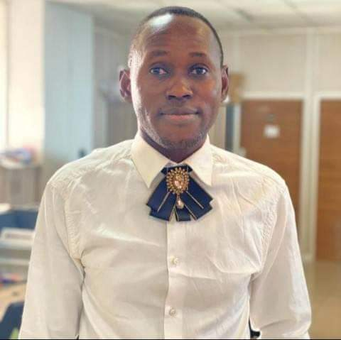

Emmanuel Musa Koweh | WDD 130

Hello, Welcome to my home, my name Emmanuel M. koweh,Am a BYU student Idaho.
Am
doing
my degree in professional study. Am learning web development and programming.I
want
to know how to build good website.
Am from Adamawa State,Northern-Eastern Nigeria. Am a Latter-day saint
Am
expecting
to learn more and am happy to be part of learning moment